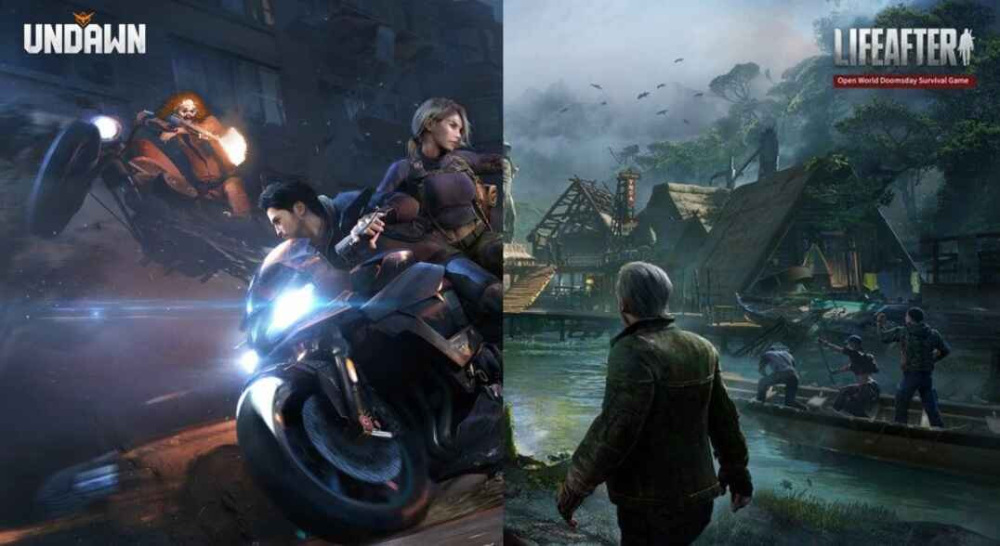

Perbandingan Undawn Vs Life After: Mana yang Lebih Cocok untuk Pecinta Game Survival Open-World?

Genre survival open-world dengan latar pasca-apokaliptik masih menjadi favorit banyak gamer mobile. Dari sekian banyak judul, Undawn dan Life After sering dibandingkan karena keduanya menyajikan pengalaman bertahan hidup di dunia penuh zombie, bahaya, dan misteri. Meski mengusung tema serupa, kedua game ini punya pendekatan gameplay dan gaya visual yang cukup berbeda.
Kalau kamu sedang mencari game survival dengan elemen open-world yang kuat, artikel ini akan membahas secara lengkap perbandingan antara Undawn dan Life After, mulai dari grafis, cerita, sistem pertarungan, sampai fitur multiplayer dan crafting. Yuk, kita bedah mana yang paling cocok untuk gaya main kamu.
1. Visual dan Grafik: Realisme Kontras Atmosfer Suram
Undawn: Visual Realistis dan Detail Hidup
Undawn dibangun menggunakan Unreal Engine 4, yang memberikan grafis super detail dan realistis. Dari reruntuhan kota, hutan lebat, hingga gurun pasir, semua tampak vibrant dan hidup. Efek cuaca seperti hujan, badai, sampai siklus siang malam terasa sangat natural, bikin pengalaman eksplorasi jadi makin imersif.
Life After: Dunia Suram yang Penuh Ketegangan
Sementara itu, Life After menggunakan Unity Engine dengan tone warna yang cenderung gelap. Dunia yang dihadirkan terasa lebih mencekam dan penuh ketegangan. Visual yang gloomy ini memperkuat atmosfer post-apokaliptik dan cocok banget buat kamu yang suka nuansa horor dan survival ekstrem.
Kesimpulan Visual
Kalau kamu suka eksplorasi dengan tampilan realistis dan penuh warna, Undawn adalah pilihan terbaik. Tapi kalau lebih senang dengan dunia yang kelam dan menegangkan, Life After bisa jadi alternatif yang pas.
2. Kustomisasi Karakter: Fleksibilitas vs Kesederhanaan
Undawn: Personalisasi Karakter yang Detail
Satu keunggulan utama Undawn adalah sistem kustomisasi karakternya yang lengkap banget. Kamu bisa mengatur hampir semua aspek, dari bentuk wajah, warna kulit, gaya rambut, sampai outfit dan perlengkapan tempur. Ini memungkinkan kamu menciptakan avatar yang benar-benar merepresentasikan identitas pribadi di dalam game.
Life After: Fokus pada Fungsi, Bukan Gaya
Life After tetap menyediakan opsi kustomisasi, tapi dalam bentuk yang lebih sederhana. Kustomisasi wajah dan pakaian ada, tapi tidak sebanyak dan sedetail Undawn. Game ini lebih menekankan pada gameplay dan pengalaman bertahan hidup, bukan penampilan karakter.
Kesimpulan Kustomisasi
Buat kamu yang suka tampil beda dan menjadikan karakter sebagai cerminan diri, Undawn jelas lebih unggul. Tapi kalau kamu lebih fokus ke gameplay dan tidak terlalu peduli soal visual karakter, Life After sudah cukup.
3. Cerita dan Narasi: Mendalam vs Praktis
Undawn: Quest Berlapis dengan Plot Menarik
Undawn menawarkan alur cerita yang cukup kompleks. Misi utama dan sampingan disusun sedemikian rupa untuk mengungkapkan latar belakang dunia yang telah runtuh. Interaksi dengan NPC juga membawa pemain ke kisah-kisah yang lebih dalam dan emosional.
Life After: Storyline Ringan dan Langsung ke Aksi
Life After menghadirkan cerita yang lebih to-the-point. Kamu bisa memilih untuk melewati bagian narasi dan langsung bermain. Bagi sebagian pemain, ini jadi nilai tambah karena mereka bisa langsung fokus ke survival dan aksi tanpa harus membaca terlalu banyak dialog.
Kesimpulan Cerita
Kalau kamu menikmati narasi mendalam dengan banyak misteri dan latar belakang cerita yang kompleks, Undawn lebih direkomendasikan. Sebaliknya, Life After cocok buat yang suka langsung ke inti permainan tanpa banyak drama.
4. Gameplay dan Mekanika Survival
Undawn: Realisme dan Tantangan Bertahan Hidup
Di Undawn, kamu dituntut untuk menjaga berbagai aspek karakter seperti rasa lapar, kelelahan, bahkan kesehatan mental. Sistem pertarungannya juga cukup realistis, menggunakan mekanik cover dan recoil senjata yang dinamis. Ini membuat tiap pertempuran jadi menegangkan dan butuh strategi.
Life After: Simpel tapi Tetap Seru
Life After punya gameplay yang lebih mudah dipahami, cocok buat pemain baru di genre survival. Mekaniknya memang tidak sekompleks Undawn, tapi tetap menyenangkan. Ditambah lagi, adanya kendaraan yang bisa dikendarai membuat eksplorasi lebih cepat dan efisien.
Kesimpulan Gameplay
Kalau kamu mencari tantangan realistis dan ingin mengelola banyak aspek survival, Undawn lebih memuaskan. Tapi jika kamu lebih suka gameplay cepat, simpel, dan tidak terlalu teknis, Life After bisa jadi pilihan tepat.
5. Multiplayer dan Komunitas
Undawn: PvP Intens dan Kerja Sama Tim
Fitur multiplayer di Undawn sangat mendukung interaksi pemain. Ada sistem guild, misi kooperatif, sampai zona PvP berisiko tinggi yang bisa memicu adrenalin. Sistem ekonomi antar pemain juga aktif berkat fitur trading dan market.
Life After: Komunitas Solid dan Event Aktif
Life After punya basis komunitas yang sangat aktif. Game ini sering mengadakan event musiman, kolaborasi, dan mode co-op yang mempererat hubungan antar pemain. Kamu juga bisa pelihara hewan, membangun rumah, dan berinteraksi sosial layaknya komunitas kecil.
Kesimpulan Multiplayer
Undawn lebih unggul untuk kamu yang suka PvP dan strategi tim, sementara Life After lebih cocok buat yang menikmati kerjasama, sosial, dan komunitas yang hangat.
6. Sistem Crafting, Senjata, dan Armor
Undawn: Crafting Kompleks dan Penuh Strategi
Crafting di Undawn cukup mendalam. Kamu perlu mencari material langka untuk membuat senjata dan armor terbaik. Prosesnya memerlukan perencanaan matang dan eksplorasi intensif.
Life After: Crafting Praktis dengan Elemen Gacha
Life After juga punya sistem crafting, namun beberapa item eksklusif hanya bisa didapat lewat sistem gacha. Ini menambah elemen keberuntungan, tapi bisa juga jadi tantangan tersendiri.
Kesimpulan Crafting
Kalau kamu suka sistem crafting yang kompleks dan strategis, Undawn adalah pilihan tepat. Tapi kalau lebih suka crafting yang simpel dan tidak terlalu ribet, Life After bisa memenuhi ekspektasi.
7. Update Berkala dan Dukungan Developer
Kedua game secara rutin mendapatkan pembaruan konten dan event musiman yang menjaga pemain tetap aktif.
- Undawn: Menambahkan map baru, fitur survival tambahan, dan cerita berkala yang terus berkembang.
- Life After: Hadir dengan kendaraan baru, mode permainan tambahan, serta fitur sosial yang makin kaya.
Memilih antara Undawn dan Life After tergantung pada gaya main dan preferensi kamu sebagai pemain.
- Pilih Undawn jika kamu:
- Suka grafis realistis dan detail yang memukau
- Mengutamakan narasi dan cerita mendalam
- Menikmati sistem survival yang realistis dan kompleks
- Ingin kustomisasi karakter dan crafting yang menyeluruh
- Mencari PvP kompetitif dan sistem guild yang solid
- Pilih Life After jika kamu:
- Menyukai atmosfer dunia pasca-kiamat yang gelap dan suram
- Ingin gameplay yang lebih praktis dan mudah diakses
- Fokus pada kerja sama tim dan komunitas aktif
- Lebih suka interaksi sosial dalam game seperti peliharaan dan rumah
Pada akhirnya, baik Undawn maupun Life After punya kelebihan masing-masing. Yang terpenting adalah memilih game yang paling cocok dengan gaya bermain kamu dan membuat kamu terus semangat untuk kembali login setiap hari.
Kalau kamu sudah mantap memilih Undawn, jangan lupa untuk memperkuat pengalaman bermainmu dengan senjata, item, dan perlengkapan premium. Kamu bisa Top Up Top Up LifeAfter langsung di Topupgim dengan harga terjangkau dan proses cepat. Rasakan sensasi survival yang lebih seru dan kompetitif!